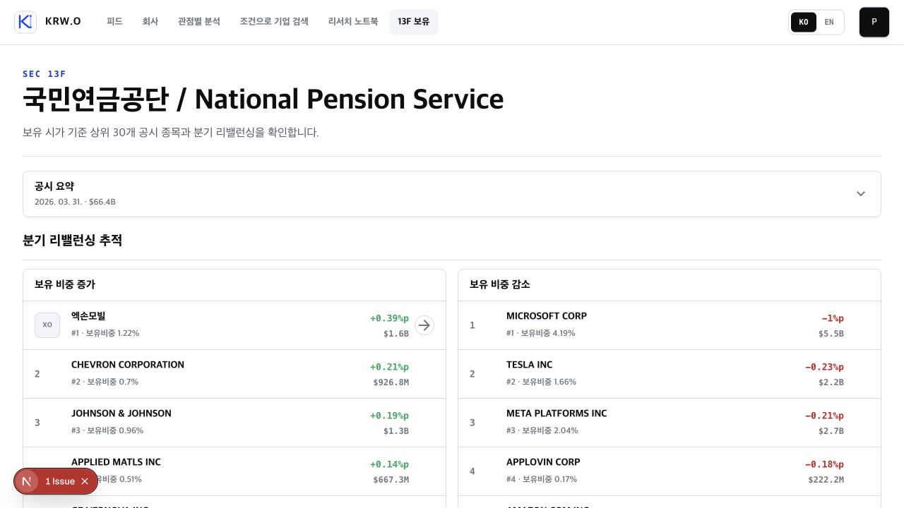
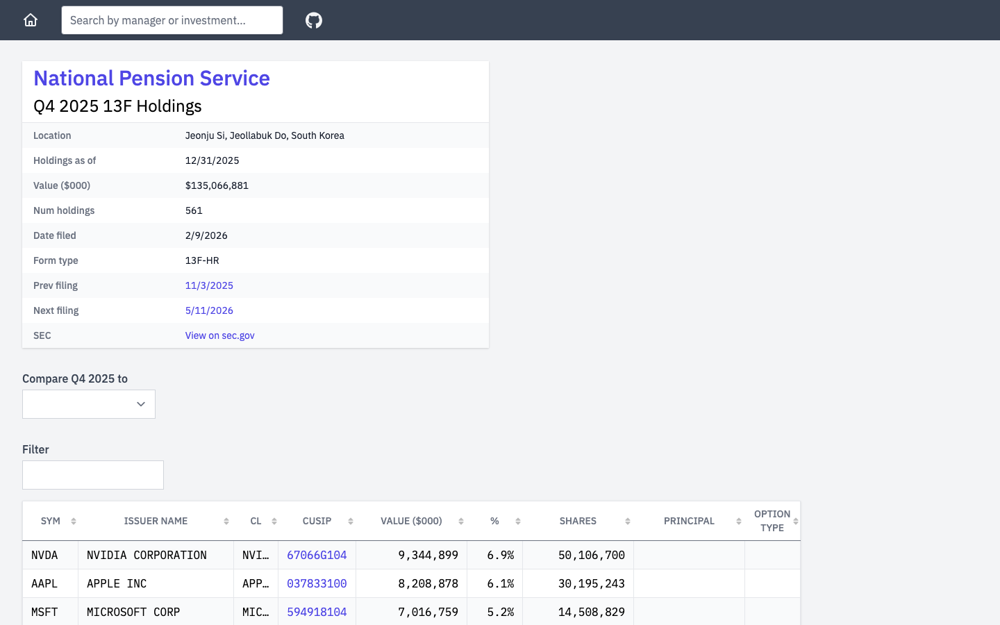

Huashu + Lazyweb design critique
기관 13F 보유 공시 화면
검토 화면: 국민연금공단 / National Pension Service · 데스크톱 1280×720 · 2026-07-26
TL;DR
기본기는 탄탄합니다. 차분한 여백, 명확한 제목, 증가/감소를 나눈 첫 번째 분석 단위는
기관 리서치 제품에 잘 맞습니다. 다만 현재 화면이 전달하는 첫인상은
「정돈된 보유 종목 표」에 가깝고, 13F에서 가장 중요한
「언제 기준의 공시이며 이전 분기 대비 무엇이 바뀌었는가」는 너무 조용합니다.
숫자를 더 넣기보다 공시 맥락과 변화의 우선순위를 더 전면에 세우면 한 단계 올라갑니다.
6.9
좋은 프로덕션 베이스라인
완성도는 높지만, 아직은 고유한 13F 리서치 화면보다는 좋은 범용 금융 테이블에 가깝습니다.
현재 화면

현재 화면. 로컬 개발 환경의 Next.js 이슈 배지는 제품 UI 평가에서 제외했습니다.
분항 평가
- 개념 / 입장
- 6.2 / 10
「분기 변화가 있는 기관 보유 공시」라는 내용은 있으나, 시각적 중심은 아직 일반 보유 테이블입니다.
- 철학 일관성
- 7.7 / 10
과장 없이 신뢰를 주는 흰 캔버스와 얇은 경계선이 기관 데이터라는 톤에 잘 맞습니다.
- 시각적 위계
- 7.2 / 10
제목 → 리밸런싱 → 보유 현황의 흐름은 명확하지만, 공시 맥락과 테이블 변화량의 우선순위가 약합니다.
- 디테일 실행
- 7.3 / 10
정렬과 간격은 안정적입니다. 반면 데스크톱 테이블의 11–13px 보조 텍스트는 장시간 읽기에 작습니다.
- 기능성
- 6.8 / 10
검색과 증감 분리는 유용하지만, 기준일·제출일·비교 분기·원문 출처가 접힌 요약 안에 머뭅니다.
- 독창성
- 5.1 / 10
유행하는 SaaS 장식은 피했지만, 「13F 변화 읽기」만의 시각적 서명은 아직 약합니다.
유지할 점
- 절제된 표면. 불필요한 그래디언트, 과한 그림자, 장식 아이콘 없이 신뢰 중심의 분위기를 유지합니다.
- 첫 화면의 방향성. 「보유 비중 증가 / 감소」를 나란히 두어, 단순 보유 목록보다 먼저 변화의 이야기를 제시합니다.
- 제목의 존재감. 한국어 기관명과 영문명을 함께 둔 큰 제목은 데이터의 주체를 빠르게 고정합니다.
- 보수적인 밀도. 30개 보유 목록을 카드로 잘게 쪼개지 않은 판단은 맞습니다. 이 화면은 표가 주인공이어야 합니다.
수정 우선순위
⚠️ 핵심
공시의 시간 맥락을 접어 두지 마세요
현재: 헤드라인 아래의 넓은 「공시 요약」 행에는 기준일과 금액만 작게 보이고, 비교 기준·제출일·원문 출처는 열어야 알 수 있습니다.
문제: 13F는 현재 보유 계좌가 아니라 분기별 공시 스냅샷입니다. 이 사실이 약하면 사용자는 수치의 시간성을 놓치고, 화면은 일반 포트폴리오 트래커처럼 읽힙니다.
수정: 제목 바로 아래에 접히지 않는 얇은 컨텍스트 바를 두세요. 「2026 Q1 · 보유 기준일 · 제출일 · 직전 분기와 비교 · SEC 원문」을 한 줄로 보이고, 상세 지표만 펼침 영역으로 남기는 편이 좋습니다.
2026 Q1 · 보유 기준일 YYYY.MM.DD · 제출일 YYYY.MM.DD
직전 분기와 비교 [2025 Q4 ▾] [SEC 원문 ↗]
⚡ 중요
보유 테이블의 「변화」를 읽기 쉬운 하나의 축으로 만드세요
현재: 비중·수량·평가액 아래에 각각 변화값이 두 줄로 배치됩니다. 정보는 충분하지만, 작은 11px 보조 값과 적녹 색만으로 의미를 구분해야 합니다. 헤더도 한국어 화면 안에서 weight / shares / value로 바뀝니다.
문제: 수량은 늘었는데 평가액은 줄 수 있는 13F 특성상, 색만 훑으면 사용자가 「무엇이 변했는지」를 잘못 읽기 쉽습니다.
수정: 데스크톱에서도 본문 수치를 최소 14px, 보조 수치를 최소 12px로 올리고, 헤더 언어를 통일하세요. 각 칼럼의 변화값에는 Δ 비중 / Δ 수량 / Δ 평가액이라는 짧은 문맥을 반복 노출하거나, 변화량을 한 개의 명시적 보조 칼럼으로 묶으세요. 적·녹은 보조 신호여야지 유일한 신호가 아니어야 합니다.
⚡ 중요
증가/감소 카드에 「크기」를 보이게 하세요
현재: 두 패널은 행 구조와 텍스트 밀도가 거의 같아, 1위와 5위의 변화량 차이가 숫자를 읽기 전에는 잘 드러나지 않습니다. 로고 배지와 순위 숫자도 섞여 리듬이 조금 흔들립니다.
수정: 카드의 표 구조는 유지하되, 변화 폭에 비례한 아주 얇은 막대 또는 한 줄의 상대 크기 표시를 넣으세요. 순위 표시는 모두 숫자로 통일하고, 티커는 이름 옆의 보조 정보로 두는 편이 더 정돈됩니다. 큰 차트가 아니라 랭킹의 시각적 무게만 추가하는 것이 핵심입니다.
💡 최적화
정보 밀도는 올리되, 카드 수는 늘리지 마세요
현재: 첫 화면의 넓은 공시 요약 행은 조용하지만, 바로 아래 리밸런싱과 테이블은 모두 비슷한 흰 패널·얇은 선·행 목록으로 보입니다.
수정: 새로운 KPI 카드 행을 추가하기보다, 컨텍스트 바와 리밸런싱의 첫 행을 조금 더 강하게 만드세요. 예를 들어 「이번 분기 최대 비중 확대: XOM +0.39%p」를 리밸런싱 제목 오른쪽에 한 줄로 두면, 빈 공간도 줄이고 화면의 서사가 생깁니다.
💡 최적화
개발 전용 이슈 배지는 최종 화면에서 제거하세요
좌하단의 빨간 「1 Issue」 배지는 개발 환경의 Next.js 오버레이로 보입니다. 제품 UI가 아니더라도 데모·스크린샷·QA 환경에서는 신뢰감을 크게 떨어뜨리므로 배포 화면에서 보이지 않도록 확인하세요.
참조: 내용상 맞는 패턴
[Web] 13F.info
원문·기준일·비교 분기를 표보다 먼저 보여 주기
이 레퍼런스는 미학적으로 복사할 대상은 아닙니다. 다만 표 상단에서
보유 기준일, 제출일, SEC 원문 링크, 비교 분기 선택을 노출한다는
정보 구조는 13F 화면에 정확히 맞습니다. 위의 첫 번째 개선안은 이 패턴을
KRW.O의 더 차분한 디자인 시스템에 맞춰 축약해 가져오자는 제안입니다.
원본 화면 열기 ↗

5분 Quick Wins
- □「공시 요약」을 제목 아래의 1줄 컨텍스트 바 + 선택적 상세 영역으로 분리하기
- □테이블 보조 글자를 12px 이상, 주요 수치를 14px 이상으로 올리고 헤더 언어를 한국어로 통일하기
- □리밸런싱 제목 옆에 최대 증감 종목을 한 줄로 노출하고, 두 리스트의 순위 표기 규칙을 통일하기
평가 범위: 제공된 로컬 데스크톱 화면의 시각·정보 구조. 로그인 이후 상태, 모바일, 실제 정렬·필터 상호작용은 이번 리뷰 범위에 포함하지 않았습니다.